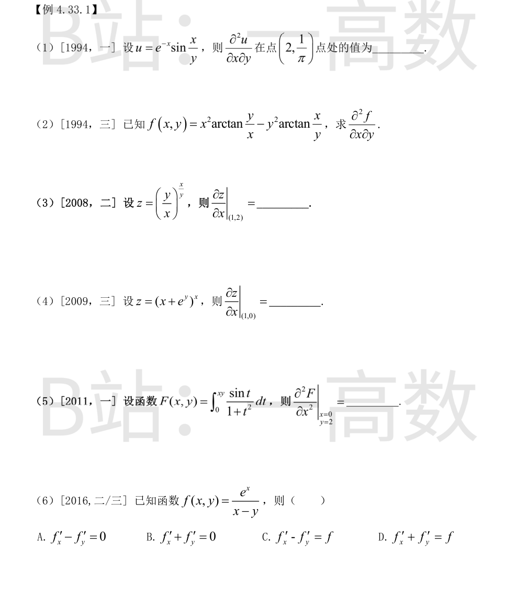
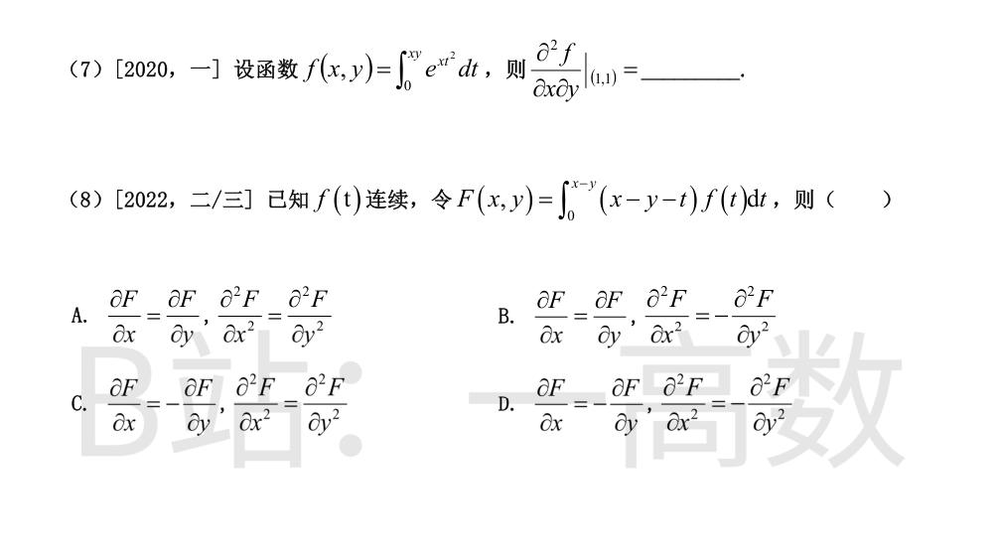
先对 x 求偏导：
$$\frac{\partial u}{\partial x}=e^{-x}\left[-\sin\frac{x}{y}+\frac{1}{y}\cos\frac{x}{y}\right]$$
再对 y 求导：
$$\frac{\partial^2 u}{\partial x\partial y}=e^{-x}\left[\frac{x}{y^{2}}\cos\frac{x}{y}-\frac{1}{y^{2}}\cos\frac{x}{y}+\frac{x}{y^{3}}\sin\frac{x}{y}\right]=e^{-x}\left[\frac{x-1}{y^{2}}\cos\frac{x}{y}+\frac{x}{y^{3}}\sin\frac{x}{y}\right]$$
代入 $(2,\tfrac1\pi)$：$x/y=2\pi$，$\sin 2\pi=0$，$\cos 2\pi=1$，$1/y^2=\pi^2$，故
$$\left.\frac{\partial^2 u}{\partial x\partial y}\right|_{(2,1/\pi)}=e^{-2}\cdot\pi^2=\pi^{2}e^{-2}$$
$$\frac{\partial f}{\partial x}=2x\arctan\frac{y}{x}+x^{2}\cdot\frac{1}{1+(y/x)^{2}}\cdot\left(-\frac{y}{x^{2}}\right)-y^{2}\cdot\frac{1}{1+(x/y)^{2}}\cdot\frac{1}{y}$$
$$=2x\arctan\frac{y}{x}-\frac{x^{2}y}{x^{2}+y^{2}}-\frac{y^{3}}{x^{2}+y^{2}}=2x\arctan\frac{y}{x}-y$$
再对 y 求导：
$$\frac{\partial^{2}f}{\partial x\partial y}=2x\cdot\frac{x^{2}}{x^{2}+y^{2}}\cdot\frac{1}{x}-1=\frac{2x^{2}}{x^{2}+y^{2}}-1=\frac{x^{2}-y^{2}}{x^{2}+y^{2}}$$
取对数：$\ln z=\dfrac{x}{y}(\ln y-\ln x)$，两边对 x 求导：
$$\frac{1}{z}\frac{\partial z}{\partial x}=\frac{1}{y}(\ln y-\ln x)+\frac{x}{y}\cdot\left(-\frac{1}{x}\right)=\frac{\ln y-\ln x}{y}-\frac{1}{y}$$
在 $(1,2)$：$z=(2)^{1/2}=\sqrt2$，于是
$$\left.\frac{\partial z}{\partial x}\right|_{(1,2)}=\sqrt2\cdot\frac{\ln 2-1}{2}$$
取对数：$\ln z=x\ln(x+e^{y})$，对 x 求导：
$$\frac{1}{z}\frac{\partial z}{\partial x}=\ln(x+e^{y})+\frac{x}{x+e^{y}}$$
在 $(1,0)$：$x+e^{y}=2$，$z=2$，故
$$\left.\frac{\partial z}{\partial x}\right|_{(1,0)}=2\left(\ln 2+\frac{1}{2}\right)=1+2\ln 2$$
由变限积分求导公式：
$$\frac{\partial F}{\partial x}=y\cdot\frac{\sin(xy)}{1+x^{2}y^{2}}$$
再对 x 求导：
$$\frac{\partial^{2}F}{\partial x^{2}}=y\cdot\frac{y\cos(xy)(1+x^{2}y^{2})-\sin(xy)\cdot 2xy^{2}}{(1+x^{2}y^{2})^{2}}$$
代入 $x=0,y=2$：$xy=0$，$\sin 0=0$，$\cos 0=1$，得
$$\left.\frac{\partial^{2}F}{\partial x^{2}}\right|_{(0,2)}=2\cdot 2=4$$
$$f'_x=\frac{e^{x}(x-y)-e^{x}}{(x-y)^{2}}=\frac{e^{x}(x-y-1)}{(x-y)^{2}},\qquad f'_y=\frac{0\cdot(x-y)+e^{x}}{(x-y)^{2}}=\frac{e^{x}}{(x-y)^{2}}$$
$$f'_x+f'_y=\frac{e^{x}(x-y-1)+e^{x}}{(x-y)^{2}}=\frac{e^{x}(x-y)}{(x-y)^{2}}=\frac{e^{x}}{x-y}=f$$
故 $f'_x+f'_y=f$，选 D。
$$\frac{\partial f}{\partial y}=x\,e^{x(xy)^{2}}=xe^{x^{3}y^{2}}$$
$$\frac{\partial^{2}f}{\partial x\partial y}=e^{x^{3}y^{2}}+x\cdot 3x^{2}y^{2}e^{x^{3}y^{2}}=e^{x^{3}y^{2}}\left(1+3x^{3}y^{2}\right)$$
代入 $(1,1)$：$e^{1}(1+3)=4e$。
记 $u=x-y$，$F=\int_0^{u}(u-t)f(t)\mathrm{d}t=u\int_0^{u}f(t)\mathrm{d}t-\int_0^{u}tf(t)\mathrm{d}t$，则
$$\frac{\mathrm{d}F}{\mathrm{d}u}=\int_{0}^{u}f(t)\mathrm{d}t+uf(u)-uf(u)=\int_{0}^{u}f(t)\mathrm{d}t$$
于是
$$\frac{\partial F}{\partial x}=\int_{0}^{x-y}f(t)\mathrm{d}t,\qquad \frac{\partial F}{\partial y}=-\int_{0}^{x-y}f(t)\mathrm{d}t\ \Rightarrow\ \frac{\partial F}{\partial x}=-\frac{\partial F}{\partial y}$$
$$\frac{\partial^{2}F}{\partial x^{2}}=f(x-y),\qquad \frac{\partial^{2}F}{\partial y^{2}}=f(x-y)\ \Rightarrow\ \frac{\partial^{2}F}{\partial x^{2}}=\frac{\partial^{2}F}{\partial y^{2}}$$
选 C。
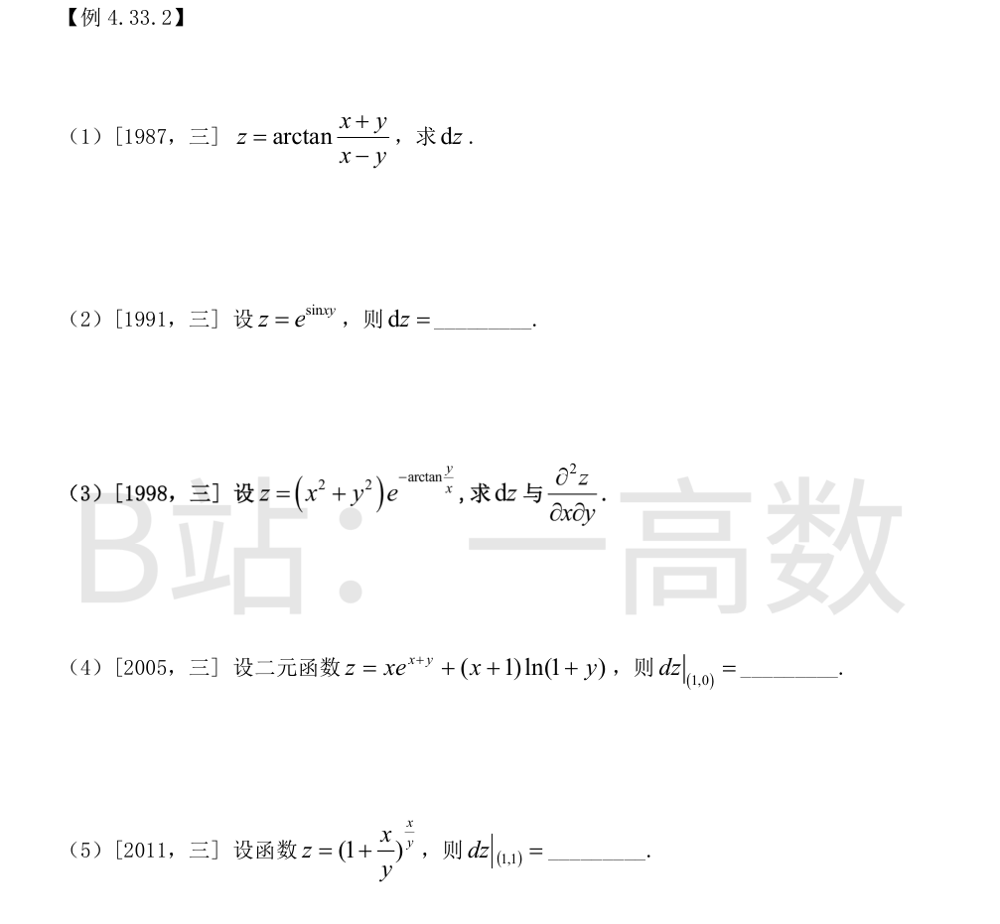
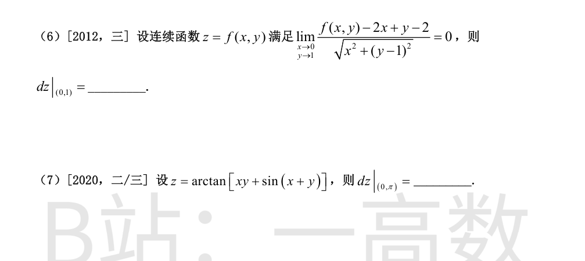
$$\frac{\partial z}{\partial x}=\frac{1}{1+\left(\frac{x+y}{x-y}\right)^{2}}\cdot\frac{(x-y)-(x+y)}{(x-y)^{2}}=\frac{(x-y)^{2}}{2(x^{2}+y^{2})}\cdot\frac{-2y}{(x-y)^{2}}=-\frac{y}{x^{2}+y^{2}}$$
$$\frac{\partial z}{\partial y}=\frac{(x-y)^{2}}{2(x^{2}+y^{2})}\cdot\frac{(x-y)+(x+y)}{(x-y)^{2}}=\frac{x}{x^{2}+y^{2}}$$
故 $dz=\dfrac{-y\,dx+x\,dy}{x^{2}+y^{2}}$。
$$\frac{\partial z}{\partial x}=e^{\sin xy}\cos(xy)\cdot y,\qquad \frac{\partial z}{\partial y}=e^{\sin xy}\cos(xy)\cdot x$$
故 $dz=e^{\sin xy}\cos(xy)(y\,dx+x\,dy)$。
注意 $\dfrac{\partial}{\partial x}\left[-\arctan\dfrac{y}{x}\right]=\dfrac{y}{x^{2}+y^{2}}$，$\dfrac{\partial}{\partial y}\left[-\arctan\dfrac{y}{x}\right]=-\dfrac{x}{x^{2}+y^{2}}$，故
$$\frac{\partial z}{\partial x}=e^{-\arctan\frac{y}{x}}\left[2x+(x^{2}+y^{2})\cdot\frac{y}{x^{2}+y^{2}}\right]=e^{-\arctan\frac{y}{x}}(2x+y)$$
$$\frac{\partial z}{\partial y}=e^{-\arctan\frac{y}{x}}\left[2y-(x^{2}+y^{2})\cdot\frac{x}{x^{2}+y^{2}}\right]=e^{-\arctan\frac{y}{x}}(2y-x)$$
$$dz=e^{-\arctan\frac{y}{x}}\left[(2x+y)\,dx+(2y-x)\,dy\right]$$
$$\frac{\partial^{2}z}{\partial x\partial y}=\frac{\partial}{\partial y}\left[e^{-\arctan\frac{y}{x}}(2x+y)\right]=e^{-\arctan\frac{y}{x}}\left[-\frac{x}{x^{2}+y^{2}}(2x+y)+1\right]=e^{-\arctan\frac{y}{x}}\cdot\frac{y^{2}-x^{2}-xy}{x^{2}+y^{2}}$$
$$\frac{\partial z}{\partial x}=(1+x)e^{x+y}+\ln(1+y),\qquad \frac{\partial z}{\partial y}=xe^{x+y}+\frac{x+1}{1+y}$$
代入 $(1,0)$：$z_x=2e$，$z_y=e+2$，故
$$dz|_{(1,0)}=2e\,dx+(e+2)\,dy$$
令 $u=\dfrac{x}{y}$，$z=(1+u)^{u}$，$\ln z=u\ln(1+u)$，
$$\frac{dz}{du}=(1+u)^{u}\left[\ln(1+u)+\frac{u}{1+u}\right]$$
在 $(1,1)$ 处 $u=1$，$z=2$，$\dfrac{dz}{du}=2\ln2+1$；又 $\dfrac{\partial u}{\partial x}=\dfrac1y=1$，$\dfrac{\partial u}{\partial y}=-\dfrac{x}{y^{2}}=-1$，故
$$z_x=2\ln2+1,\qquad z_y=-(2\ln2+1),\qquad dz|_{(1,1)}=(2\ln2+1)(dx-dy)$$
分母趋于零而极限为零，故分子趋于零，得 $f(0,1)=1$；且
$$f(x,y)-f(0,1)=2x-(y-1)+o\left(\sqrt{x^{2}+(y-1)^{2}}\right)$$
即 $f$ 在 $(0,1)$ 可微，且 $f'_x(0,1)=2$，$f'_y(0,1)=-1$，故
$$dz|_{(0,1)}=2dx-dy$$
$$\frac{\partial z}{\partial x}=\frac{y+\cos(x+y)}{1+\left[xy+\sin(x+y)\right]^{2}},\qquad \frac{\partial z}{\partial y}=\frac{x+\cos(x+y)}{1+\left[xy+\sin(x+y)\right]^{2}}$$
代入 $(0,\pi)$：$xy=0$，$\sin\pi=0$，分母为 1，$z_x=\pi+\cos\pi=\pi-1$，$z_y=\cos\pi=-1$，故
$$dz|_{(0,\pi)}=(\pi-1)\,dx-dy$$
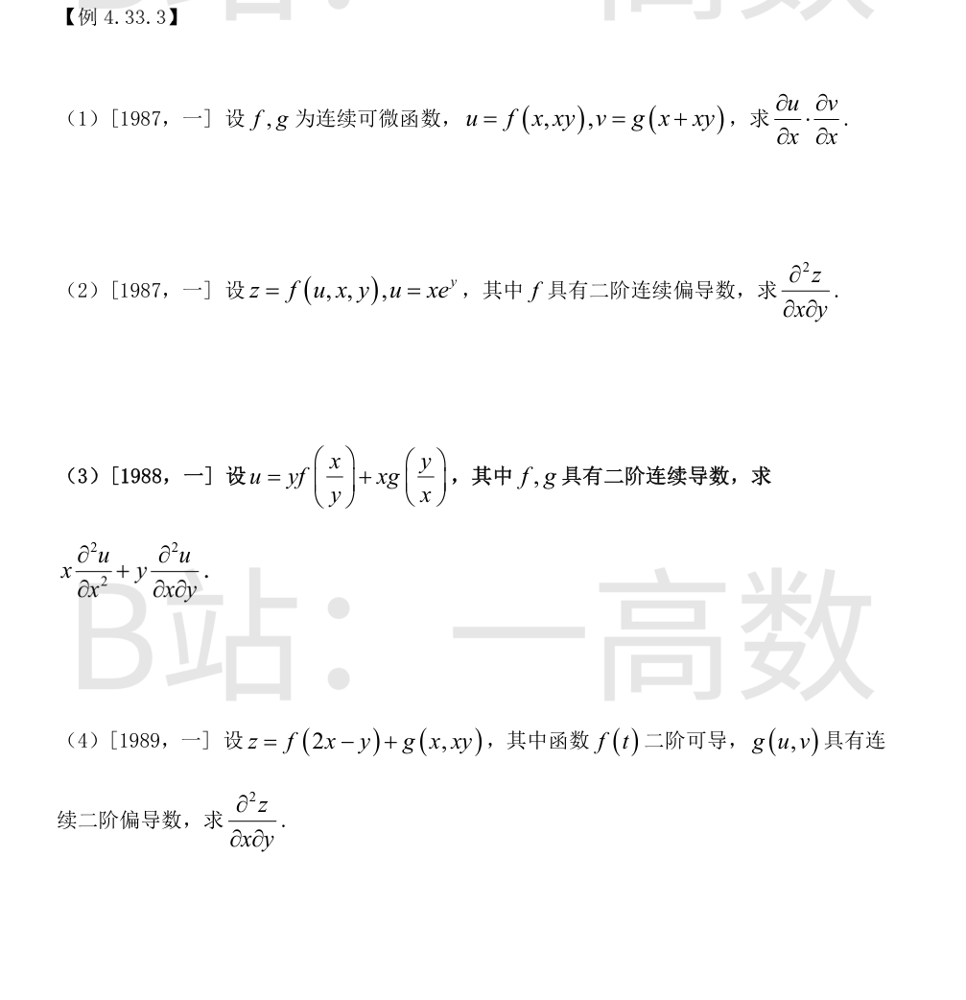
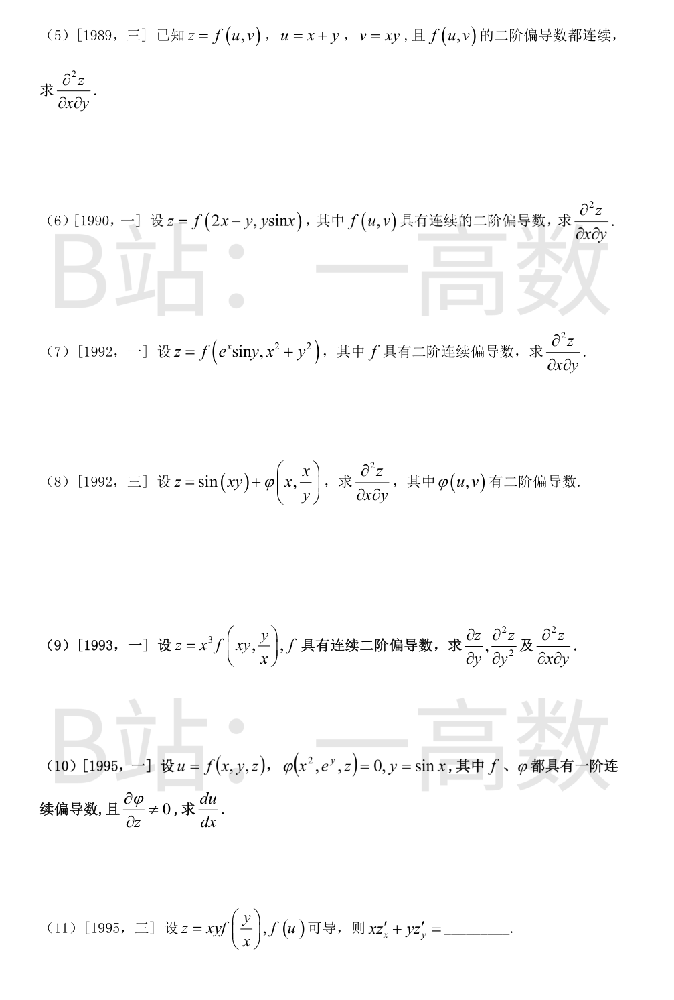
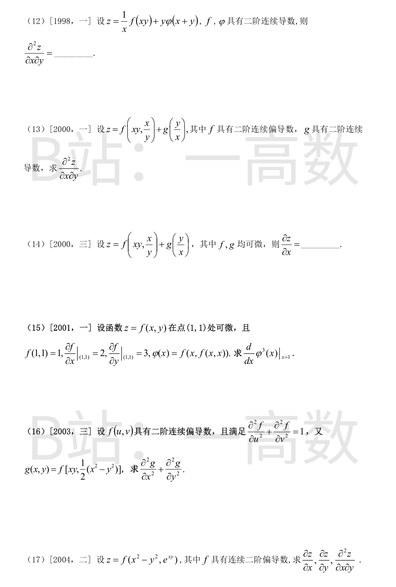
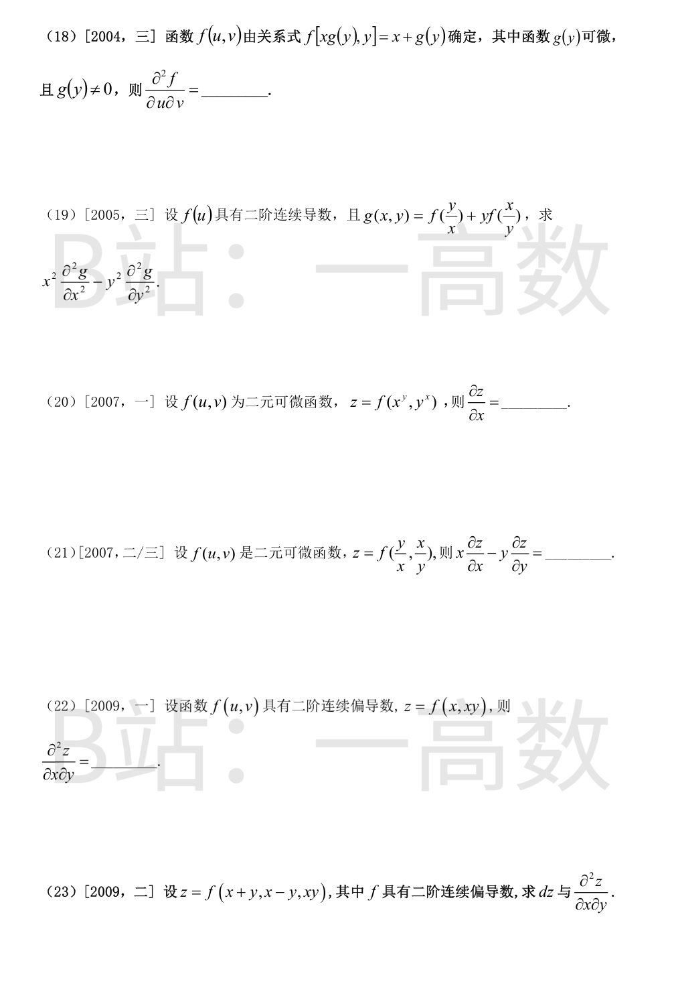
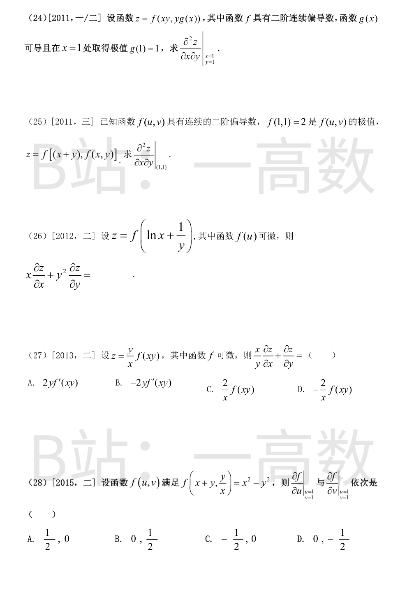
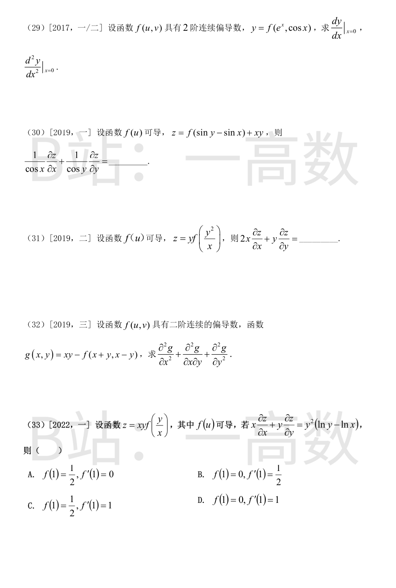
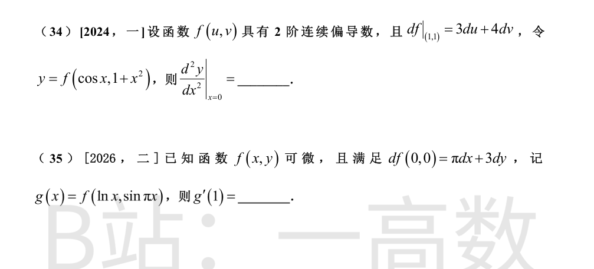
$$\frac{\partial u}{\partial x}=f'_1(x,xy)+f'_2(x,xy)\cdot y$$
$$\frac{\partial v}{\partial x}=g'(x+xy)\cdot(1+y)$$
$$\frac{\partial u}{\partial x}\cdot\frac{\partial v}{\partial x}=(1+y)\,g'(x+xy)\left[f'_1(x,xy)+y f'_2(x,xy)\right]$$
$$\frac{\partial z}{\partial x}=e^{y}f'_1+f'_2$$
再对 y 求导（注意第一中间变量对 y 的导数为 $xe^y$，第二变量 x 与 y 无关，第三变量即 y）：
$$\frac{\partial^{2}z}{\partial x\partial y}=e^{y}f'_1+e^{y}\left(xe^{y}f''_{11}+f''_{13}\right)+\left(xe^{y}f''_{21}+f''_{23}\right)$$
利用 $f''_{12}=f''_{21}$ 得
$$\frac{\partial^{2}z}{\partial x\partial y}=e^{y}f'_1+xe^{2y}f''_{11}+e^{y}f''_{13}+xe^{y}f''_{12}+f''_{23}$$
【仲裁修正】独立校验发现分歧，经仲裁重解，以本答案为准：A 把对第三个中间变量 y 求导的下标写错：应为 f₁₃''、f₂₃''，A 写成 f₁₂''、f₂₂''；solver 与 B 正确（f''_{12}=f''_{21}）。
$$\frac{\partial u}{\partial x}=f'\left(\frac{x}{y}\right)+g\left(\frac{y}{x}\right)-\frac{y}{x}g'\left(\frac{y}{x}\right)$$
$$\frac{\partial^{2}u}{\partial x^{2}}=\frac{1}{y}f''\left(\frac{x}{y}\right)-\frac{y}{x^{2}}g'+\frac{y}{x^{2}}g'+\frac{y^{2}}{x^{3}}g''=\frac{1}{y}f''\left(\frac{x}{y}\right)+\frac{y^{2}}{x^{3}}g''\left(\frac{y}{x}\right)$$
对 $\dfrac{\partial u}{\partial x}$ 逐项关于 y 求导：
$$\frac{d}{dy}\left[f'\left(\frac{x}{y}\right)\right]=-\frac{x}{y^{2}}f''\left(\frac{x}{y}\right),\qquad \frac{d}{dy}\left[g\left(\frac{y}{x}\right)\right]=\frac{1}{x}g'\left(\frac{y}{x}\right)$$
$$\frac{d}{dy}\left[-\frac{y}{x}g'\left(\frac{y}{x}\right)\right]=-\frac{1}{x}g'\left(\frac{y}{x}\right)-\frac{y}{x^{2}}g''\left(\frac{y}{x}\right)$$
后两项中 $g'$ 相消：
$$\frac{\partial^{2}u}{\partial x\partial y}=-\frac{x}{y^{2}}f''\left(\frac{x}{y}\right)-\frac{y}{x^{2}}g''\left(\frac{y}{x}\right)$$
$$x\frac{\partial^{2}u}{\partial x^{2}}+y\frac{\partial^{2}u}{\partial x\partial y}=\left(\frac{x}{y}f''+\frac{y^{2}}{x^{2}}g''\right)-\left(\frac{x}{y}f''+\frac{y^{2}}{x^{2}}g''\right)=0$$
$$\frac{\partial z}{\partial x}=2f'(2x-y)+g'_1(x,xy)+y\,g'_2(x,xy)$$
再对 y 求导（$g$ 的第一个中间变量 $x$ 与 y 无关，第二个为 $xy$）：
$$\frac{\partial^{2}z}{\partial x\partial y}=-2f''(2x-y)+x\,g''_{12}+g'_2+y\cdot x\,g''_{22}$$
$$\frac{\partial z}{\partial x}=f'_1+y f'_2$$
$$\frac{\partial^{2}z}{\partial x\partial y}=\left(f''_{11}\cdot1+f''_{12}\cdot x\right)+f'_2+y\left(f''_{21}\cdot1+f''_{22}\cdot x\right)$$
利用对称性合并得
$$\frac{\partial^{2}z}{\partial x\partial y}=f''_{11}+(x+y)f''_{12}+xy f''_{22}+f'_2$$
$$\frac{\partial z}{\partial x}=2f'_1+y\cos x\, f'_2$$
再对 y 求导（中间变量对 y 的导数：第一个为 $-1$，第二个为 $\sin x$）：
$$\frac{\partial^{2}z}{\partial x\partial y}=2\left(-f''_{11}+\sin x\, f''_{12}\right)+\cos x\, f'_2+y\cos x\left(-f''_{21}+\sin x\, f''_{22}\right)$$
$$=-2f''_{11}+(2\sin x-y\cos x)f''_{12}+y\sin x\cos x\, f''_{22}+\cos x\, f'_2$$
$$\frac{\partial z}{\partial x}=e^{x}\sin y\, f'_1+2x f'_2$$
再对 y 求导（中间变量对 y 的导数：$e^x\cos y$ 与 $2y$）：
$$\frac{\partial^{2}z}{\partial x\partial y}=e^{x}\cos y\, f'_1+e^{x}\sin y\left(e^{x}\cos y\, f''_{11}+2y f''_{12}\right)+2x\left(e^{x}\cos y\, f''_{21}+2y f''_{22}\right)$$
$$=e^{x}\cos y\, f'_1+e^{2x}\sin y\cos y\, f''_{11}+2e^{x}(y\sin y+x\cos y)f''_{12}+4xy f''_{22}$$
$$\frac{\partial z}{\partial x}=y\cos(xy)+\varphi'_1+\frac{1}{y}\varphi'_2$$
再对 y 求导（$\varphi$ 的第二个中间变量 $x/y$ 对 y 的导数为 $-x/y^{2}$）：
$$\frac{\partial^{2}z}{\partial x\partial y}=\cos(xy)-xy\sin(xy)-\frac{x}{y^{2}}\varphi''_{12}-\frac{1}{y^{2}}\varphi'_2+\frac{1}{y}\left(-\frac{x}{y^{2}}\right)\left(\varphi''_{21}+\varphi''_{22}\right)$$
利用 $\varphi''_{12}=\varphi''_{21}$：
$$\frac{\partial^{2}z}{\partial x\partial y}=\cos(xy)-xy\sin(xy)-\frac{1}{y^{2}}\varphi'_2-\frac{2x}{y^{3}}\varphi''_{12}-\frac{x}{y^{3}}\varphi''_{22}$$
【仲裁修正】独立校验发现分歧，经仲裁重解，以本答案为准：solver 把 φ''₁₂ 项系数写成 2x/y³，重解（并用具体 φ 验证）应为 x/y²；A、B 一致正确。
$$\frac{\partial z}{\partial y}=x^{3}\left(xf'_1+\frac{1}{x}f'_2\right)=x^{4}f'_1+x^{2}f'_2$$
$$\frac{\partial^{2}z}{\partial y^{2}}=x^{4}\left(xf''_{11}+\frac{1}{x}f''_{12}\right)+x^{2}\left(xf''_{21}+\frac{1}{x}f''_{22}\right)=x^{5}f''_{11}+2x^{3}f''_{12}+xf''_{22}$$
$$\frac{\partial^{2}z}{\partial x\partial y}=4x^{3}f'_1+x^{4}\left(yf''_{11}-\frac{y}{x^{2}}f''_{12}\right)+2xf'_2+x^{2}\left(yf''_{21}-\frac{y}{x^{2}}f''_{22}\right)$$
$$=4x^{3}f'_1+x^{4}y f''_{11}+2x f'_2-y f''_{22}$$（交叉项 $-x^{2}y f''_{12}+x^{2}y f''_{21}=0$）
由 $\varphi(x^{2},e^{y},z)=0$（$y=\sin x$）确定 $z=z(x)$，两边关于 x 求导：
$$\varphi'_1\cdot 2x+\varphi'_2\cdot e^{\sin x}\cos x+\varphi'_3\frac{dz}{dx}=0\ \Rightarrow\ \frac{dz}{dx}=-\frac{2x\varphi'_1+e^{\sin x}\cos x\,\varphi'_2}{\varphi'_3}$$
再由全导数公式（$dy/dx=\cos x$）：
$$\frac{du}{dx}=f'_1+f'_2\cos x+f'_3\frac{dz}{dx}=f'_1+\cos x\, f'_2-\frac{f'_3}{\varphi'_3}\left(2x\varphi'_1+e^{\sin x}\cos x\,\varphi'_2\right)$$
记 $u=\dfrac{y}{x}$：
$$\frac{\partial z}{\partial x}=y f(u)+xy f'(u)\left(-\frac{y}{x^{2}}\right)=y f(u)-\frac{y^{2}}{x}f'(u)$$
$$\frac{\partial z}{\partial y}=x f(u)+xy f'(u)\cdot\frac{1}{x}=x f(u)+y f'(u)$$
$$x z_x+y z_y=\left[xy f(u)-y^{2}f'(u)\right]+\left[xy f(u)+y^{2}f'(u)\right]=2xy f\left(\frac{y}{x}\right)$$
（$z$ 为二次齐次函数，亦可由欧拉定理直接得）
$$\frac{\partial z}{\partial y}=\frac{1}{x}\cdot x f'(xy)+\varphi(x+y)=f'(xy)+\varphi(x+y)$$
$$\frac{\partial^{2}z}{\partial x\partial y}=y f''(xy)+\varphi'(x+y)$$
$$\frac{\partial z}{\partial x}=y f'_1+\frac{1}{y}f'_2-\frac{y}{x^{2}}g'$$
再对 y 求导：
$$\frac{\partial^{2}z}{\partial x\partial y}=f'_1+y\left(xf''_{11}-\frac{x}{y^{2}}f''_{12}\right)-\frac{1}{y^{2}}f'_2+\frac{1}{y}\left(xf''_{21}-\frac{x}{y^{2}}f''_{22}\right)-\frac{1}{x^{2}}g'$$
交叉项 $-\frac{x}{y}f''_{12}+\frac{x}{y}f''_{21}=0$，故
$$\frac{\partial^{2}z}{\partial x\partial y}=f'_1-\frac{1}{y^{2}}f'_2+xy f''_{11}-\frac{x}{y^{3}}f''_{22}-\frac{1}{x^{2}}g'$$
【仲裁修正】独立校验发现分歧，经仲裁重解，以本答案为准：solver 漏掉 −(y/x³)g'' 项（g'(y/x) 对 y 再求导产生）；A、B 正确。
由链式法则，$f$ 的两个中间变量 $xy$、$x/y$ 对 x 的导数分别为 $y$、$\dfrac{1}{y}$，$g$ 的中间变量 $y/x$ 对 x 的导数为 $-\dfrac{y}{x^{2}}$：
$$\frac{\partial z}{\partial x}=y f'_1+\frac{1}{y}f'_2-\frac{y}{x^{2}}g'$$
$\varphi(1)=f(1,1)=1$。由复合求导：
$$\varphi'(x)=f'_1(x,f(x,x))+f'_2(x,f(x,x))\left[f'_1(x,x)+f'_2(x,x)\right]$$
代入 $x=1$：
$$\varphi'(1)=2+3\times(2+3)=17$$
$$\left.\frac{d}{dx}\varphi^{3}(x)\right|_{x=1}=3\varphi^{2}(1)\varphi'(1)=3\times1\times17=51$$
【仲裁修正】独立校验发现分歧，经仲裁重解，以本答案为准：A 把题干误读为三层嵌套 f(x,f(x,f(x,x))) 得 159；已核对原书（PDF 页178/书页174），原题为 φ(x)=f(x,f(x,x))，φ'(1)=2+3×5=17，3φ²(1)φ'(1)=51，solver 与 B 正确。
记 $u=xy$，$v=\dfrac{x^{2}-y^{2}}{2}$，则 $u_x=y$，$u_y=x$，$v_x=x$，$v_y=-y$。
$$g_x=y f'_1+x f'_2$$
$$g_{xx}=y\left(yf''_{11}+xf''_{12}\right)+f'_2+x\left(yf''_{21}+xf''_{22}\right)=y^{2}f''_{11}+2xy f''_{12}+x^{2}f''_{22}+f'_2$$
$$g_y=x f'_1-y f'_2,\qquad g_{yy}=x^{2}f''_{11}-2xy f''_{12}+y^{2}f''_{22}-f'_2$$
$$g_{xx}+g_{yy}=(x^{2}+y^{2})(f''_{11}+f''_{22})=x^{2}+y^{2}$$
$$\frac{\partial z}{\partial x}=2x f'_1+ye^{xy}f'_2,\qquad \frac{\partial z}{\partial y}=-2y f'_1+xe^{xy}f'_2$$
$$\frac{\partial^{2}z}{\partial x\partial y}=\frac{\partial}{\partial y}\left[2x f'_1+ye^{xy}f'_2\right]$$
$$=2x\left(-2y f''_{11}+xe^{xy}f''_{12}\right)+(1+xy)e^{xy}f'_2+ye^{xy}\left(-2y f''_{21}+xe^{xy}f''_{22}\right)$$
$$=-4xy f''_{11}+2(x^{2}-y^{2})e^{xy}f''_{12}+xy e^{2xy}f''_{22}+(1+xy)e^{xy}f'_2$$
令 $u=xg(y)$，$v=y$，则 $x=\dfrac{u}{g(v)}$，代入得
$$f(u,v)=\frac{u}{g(v)}+g(v)$$
$$\frac{\partial f}{\partial u}=\frac{1}{g(v)}\ \Rightarrow\ \frac{\partial^{2}f}{\partial u\partial v}=-\frac{g'(v)}{g^{2}(v)}$$
记 $a=\dfrac{y}{x}$，$b=\dfrac{x}{y}$。
$$g_x=-\frac{y}{x^{2}}f'(a)+f'(b),\qquad g_{xx}=\frac{2y}{x^{3}}f'(a)+\frac{y^{2}}{x^{4}}f''(a)+\frac{1}{y}f''(b)$$
$$g_y=\frac{1}{x}f'(a)+f(b)-\frac{x}{y}f'(b),\qquad g_{yy}=\frac{1}{x^{2}}f''(a)+\frac{x^{2}}{y^{3}}f''(b)$$
（$g_{yy}$ 中 $-\frac{x}{y}f'(b)$ 求导时 $f'$ 的两项相消）
$$x^{2}g_{xx}-y^{2}g_{yy}=\frac{2y}{x}f'(a)+\frac{y^{2}}{x^{2}}f''(a)+\frac{x^{2}}{y}f''(b)-\frac{y^{2}}{x^{2}}f''(a)-\frac{x^{2}}{y}f''(b)=\frac{2y}{x}f'\left(\frac{y}{x}\right)$$
两个中间变量对 x 的导数分别为 $\dfrac{\partial}{\partial x}x^{y}=yx^{y-1}$ 与 $\dfrac{\partial}{\partial x}y^{x}=y^{x}\ln y$，故
$$\frac{\partial z}{\partial x}=yx^{y-1}f'_1+y^{x}\ln y\, f'_2$$
$$\frac{\partial z}{\partial x}=-\frac{y}{x^{2}}f'_1+\frac{1}{y}f'_2,\qquad \frac{\partial z}{\partial y}=\frac{1}{x}f'_1-\frac{x}{y^{2}}f'_2$$
$$xz_x-yz_y=\left(-\frac{y}{x}f'_1+\frac{x}{y}f'_2\right)-\left(\frac{y}{x}f'_1-\frac{x}{y}f'_2\right)=2\left(\frac{x}{y}f'_2-\frac{y}{x}f'_1\right)$$
$$\frac{\partial z}{\partial x}=f'_1+y f'_2$$
$$\frac{\partial^{2}z}{\partial x\partial y}=x f''_{12}+f'_2+y\cdot x f''_{22}=f'_2+xf''_{12}+xy f''_{22}$$
中间变量 $u=x+y$，$v=x-y$，$w=xy$：
$$z_x=f'_1+f'_2+y f'_3,\qquad z_y=f'_1-f'_2+x f'_3$$
$$dz=(f'_1+f'_2+y f'_3)\,dx+(f'_1-f'_2+x f'_3)\,dy$$
$$z_{xy}=\left(f''_{11}-f''_{12}+xf''_{13}\right)+\left(f''_{21}-f''_{22}+xf''_{23}\right)+f'_3+y\left(f''_{31}-f''_{32}+xf''_{33}\right)$$
利用混合偏导相等（$f''_{12}=f''_{21}$，$f''_{13}=f''_{31}$，$f''_{23}=f''_{32}$）合并：
$$z_{xy}=f''_{11}-f''_{22}+(x+y)f''_{13}+(x-y)f''_{23}+xy f''_{33}+f'_3$$
由 $g$ 在 $x=1$ 取极值且可导得 $g'(1)=0$。
$$z_x=y f'_1+y g'(x) f'_2$$
$$z_{xy}=f'_1+y\left(x f''_{11}+g'(x) f''_{12}\right)+g'(x) f'_2+y g'(x)\left(x f''_{21}+g'(x) f''_{22}\right)$$
在 $(1,1)$ 处：$g'(1)=0$，中间变量之值均为 1，故
$$\left.\frac{\partial^{2}z}{\partial x\partial y}\right|_{(1,1)}=f'_1(1,1)+f''_{11}(1,1)$$
由 $f(1,1)=2$ 为极值得 $f'_1(1,1)=f'_2(1,1)=0$。记外层点 $A=(x+y,\,f(x,y))$：
$$z_x=f'_1(A)+f'_2(A)\,f'_1(x,y)$$
$$z_{xy}=f''_{11}(A)+f''_{12}(A)f'_2(x,y)+\left[f''_{21}(A)+f''_{22}(A)f'_2(x,y)\right]f'_1(x,y)+f'_2(A)f''_{12}(x,y)$$
在 $(1,1)$ 处 $A=(2,2)$，且 $f'_1(1,1)=f'_2(1,1)=0$，中间三项全部消失：
$$\left.\frac{\partial^{2}z}{\partial x\partial y}\right|_{(1,1)}=f''_{11}(2,2)+f'_2(2,2)f''_{12}(1,1)$$
$$\frac{\partial z}{\partial x}=f'\cdot\frac{1}{x},\qquad \frac{\partial z}{\partial y}=f'\cdot\left(-\frac{1}{y^{2}}\right)$$
$$x\frac{\partial z}{\partial x}+y^{2}\frac{\partial z}{\partial y}=f'-f'=0$$
$$\frac{\partial z}{\partial x}=-\frac{y}{x^{2}}f(xy)+\frac{y^{2}}{x}f'(xy),\qquad \frac{\partial z}{\partial y}=\frac{1}{x}f(xy)+y f'(xy)$$
$$\frac{x}{y}z_x+z_y=-\frac{1}{x}f+y f'+\frac{1}{x}f+y f'=2y f'(xy)$$
选 A。
令 $u=x+y$，$v=y/x$，解出 $x=\dfrac{u}{1+v}$，$y=\dfrac{uv}{1+v}$，则
$$f(u,v)=x^{2}-y^{2}=(x+y)(x-y)=u\cdot\frac{u(1-v)}{1+v}=\frac{u^{2}(1-v)}{1+v}$$
$$f'_u=\frac{2u(1-v)}{1+v}\Big|_{(1,1)}=0,\qquad f'_v=u^{2}\cdot\frac{-(1+v)-(1-v)}{(1+v)^{2}}\Big|_{(1,1)}=-\frac{2}{4}=-\frac{1}{2}$$
即依次为 $0,\ -\dfrac12$，选 D。
$$\frac{dy}{dx}=e^{x}f'_1-\sin x\, f'_2\ \Rightarrow\ y'(0)=f'_1(1,1)$$
$$\frac{d^{2}y}{dx^{2}}=e^{x}f'_1+e^{x}\left(e^{x}f''_{11}-\sin x\, f''_{12}\right)-\cos x\, f'_2-\sin x\left(e^{x}f''_{21}-\sin x\, f''_{22}\right)$$
代入 $x=0$（此时 $(u,v)=(1,1)$）：
$$y''(0)=f'_1(1,1)+f''_{11}(1,1)-f'_2(1,1)$$
$$\frac{\partial z}{\partial x}=-\cos x\, f'(u)+y,\qquad \frac{\partial z}{\partial y}=\cos y\, f'(u)+x\quad(u=\sin y-\sin x)$$
$$\frac{1}{\cos x}z_x+\frac{1}{\cos y}z_y=-f'(u)+\frac{y}{\cos x}+f'(u)+\frac{x}{\cos y}=\frac{y}{\cos x}+\frac{x}{\cos y}$$
记 $u=\dfrac{y^{2}}{x}$：
$$\frac{\partial z}{\partial x}=y f'(u)\left(-\frac{y^{2}}{x^{2}}\right)=-\frac{y^{3}}{x^{2}}f'(u),\qquad \frac{\partial z}{\partial y}=f(u)+y f'(u)\cdot\frac{2y}{x}=f(u)+\frac{2y^{2}}{x}f'(u)$$
$$2xz_x+yz_y=-\frac{2y^{3}}{x}f'(u)+y f(u)+\frac{2y^{3}}{x}f'(u)=y f\left(\frac{y^{2}}{x}\right)$$
$$g_x=y-\left(f'_1+f'_2\right),\qquad g_y=x-\left(f'_1-f'_2\right)$$
$$g_{xx}=-\left(f''_{11}+2f''_{12}+f''_{22}\right)$$
$$g_{xy}=1-\left(f''_{11}-f''_{12}\right)-\left(f''_{21}-f''_{22}\right)=1-f''_{11}+f''_{22}$$
$$g_{yy}=-\left(f''_{11}-2f''_{12}+f''_{22}\right)$$
$$g_{xx}+g_{xy}+g_{yy}=1-3f''_{11}-f''_{22}$$
（$f$ 的各阶偏导数均在 $(x+y,\,x-y)$ 处取值）
由本组第 (11) 题同法（欧拉定理）：$xz_x+yz_y=2xy f\left(\dfrac{y}{x}\right)$。依题意
$$2xy f\left(\frac{y}{x}\right)=y^{2}\ln\frac{y}{x}\ \Rightarrow\ 2f(u)=u\ln u\quad\left(u=\frac{y}{x}\right)$$
$$f(u)=\frac{u}{2}\ln u\ \Rightarrow\ f(1)=0,\qquad f'(u)=\frac{1}{2}(\ln u+1)\ \Rightarrow\ f'(1)=\frac{1}{2}$$
选 B。
由 $df|_{(1,1)}=3du+4dv$ 得 $f'_1(1,1)=3$，$f'_2(1,1)=4$；且 $x=0$ 时 $u=\cos0=1$，$v=1+0=1$。
$$y'=-\sin x\, f'_1+2x f'_2\ \Rightarrow\ y'(0)=0$$
$$y''=-\cos x\, f'_1-\sin x\left(-\sin x\, f''_{11}+2x f''_{12}\right)+2f'_2+2x\left(-\sin x\, f''_{21}+2x f''_{22}\right)$$
代入 $x=0$：
$$y''(0)=-f'_1(1,1)+2f'_2(1,1)=-3+8=5$$
由 $df(0,0)=\pi dx+3dy$ 得 $f_x(0,0)=\pi$，$f_y(0,0)=3$。
$$g'(x)=\frac{1}{x}f_x\left(\ln x,\sin\pi x\right)+\pi\cos(\pi x)\, f_y\left(\ln x,\sin\pi x\right)$$
$x=1$ 时 $(\ln1,\sin\pi)=(0,0)$，且 $\cos\pi=-1$，故
$$g'(1)=1\cdot\pi+\pi\cdot(-1)\cdot 3=\pi-3\pi=-2\pi$$
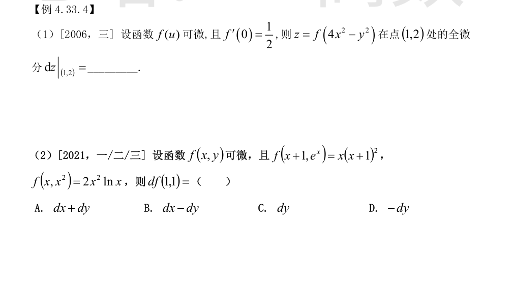
令 $u=4x^{2}-y^{2}$，在 $(1,2)$ 处 $u=0$。
$$\frac{\partial z}{\partial x}=8x f'(u),\qquad \frac{\partial z}{\partial y}=-2y f'(u)$$
代入 $(1,2)$ 与 $f'(0)=\dfrac12$：
$$z_x=8\cdot\frac12=4,\qquad z_y=-4\cdot\frac12=-2,\qquad dz|_{(1,2)}=4dx-2dy$$
两个恒等式两边对 x 求导：
由 $f(x+1,e^{x})=x(x+1)^{2}$：
$$f'_1+e^{x}f'_2=(x+1)^{2}+2x(x+1)=(x+1)(3x+1)$$
代入 $x=0$（对应点 $(1,1)$）：$f'_1(1,1)+f'_2(1,1)=1$。
由 $f(x,x^{2})=2x^{2}\ln x$：
$$f'_1+2x f'_2=4x\ln x+2x$$
代入 $x=1$（对应点 $(1,1)$）：$f'_1(1,1)+2f'_2(1,1)=2$。
两式相减得 $f'_2(1,1)=1$，回代得 $f'_1(1,1)=0$，故
$$df(1,1)=0\cdot dx+1\cdot dy=dy$$
选 C。
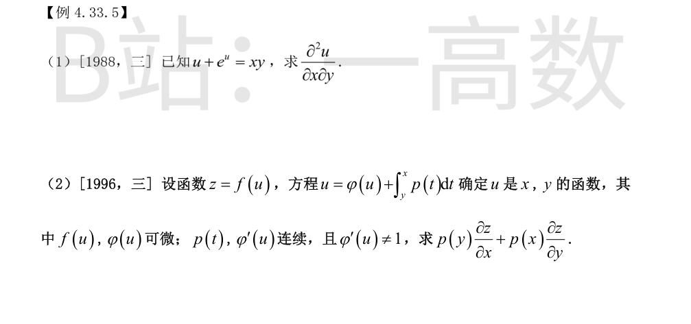
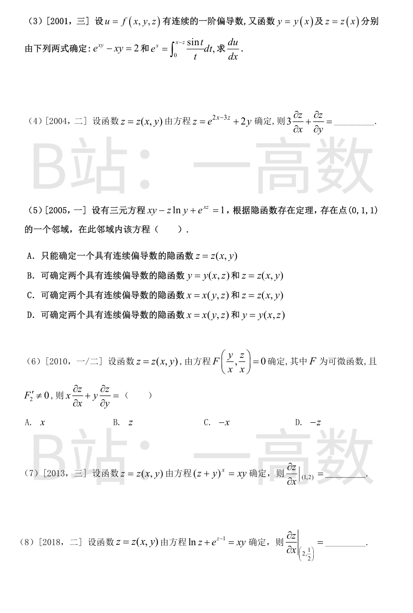
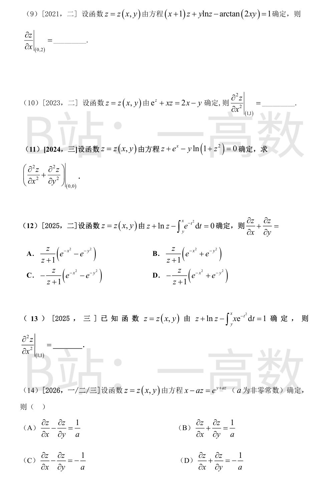
$$u_x(1+e^{u})=y\ \Rightarrow\ u_x=\frac{y}{1+e^{u}},\qquad u_y=\frac{x}{1+e^{u}}$$
$$\frac{\partial^{2}u}{\partial x\partial y}=\frac{\partial}{\partial y}\left(\frac{y}{1+e^{u}}\right)=\frac{(1+e^{u})-y\,e^{u}u_y}{(1+e^{u})^{2}}=\frac{(1+e^{u})^{2}-xy\,e^{u}}{(1+e^{u})^{3}}$$
方程 $u=\varphi(u)+\int_y^x p(t)\mathrm{d}t$ 两边分别对 x、y 求导：
$$u_x=\varphi'(u)u_x+p(x)\ \Rightarrow\ u_x=\frac{p(x)}{1-\varphi'(u)}$$
$$u_y=\varphi'(u)u_y-p(y)\ \Rightarrow\ u_y=-\frac{p(y)}{1-\varphi'(u)}$$
$$\frac{\partial z}{\partial x}=\frac{f'(u)p(x)}{1-\varphi'(u)},\qquad \frac{\partial z}{\partial y}=-\frac{f'(u)p(y)}{1-\varphi'(u)}$$
$$p(y)\frac{\partial z}{\partial x}+p(x)\frac{\partial z}{\partial y}=\frac{f'(u)}{1-\varphi'(u)}\left[p(y)p(x)-p(x)p(y)\right]=0$$
由 $e^{xy}-xy=2$ 两边求导：$(y+xy')(e^{xy}-1)=0$。因 $e^{xy}=xy+2>1$，故 $e^{xy}-1\neq0$，得 $y'=-\dfrac{y}{x}$。
由 $e^{x}=\int_0^{x-z}\dfrac{\sin t}{t}\mathrm{d}t$ 两边求导：
$$e^{x}=\frac{\sin(x-z)}{x-z}\left(1-z'\right)\ \Rightarrow\ z'=1-\frac{e^{x}(x-z)}{\sin(x-z)}$$
$$\frac{du}{dx}=f'_1+f'_2 y'+f'_3 z'=f'_1-\frac{y}{x}f'_2+\left[1-\frac{e^{x}(x-z)}{\sin(x-z)}\right]f'_3$$
$$z_x=e^{2x-3z}(2-3z_x)\ \Rightarrow\ z_x=\frac{2e^{2x-3z}}{1+3e^{2x-3z}}$$
$$z_y=e^{2x-3z}(-3z_y)+2\ \Rightarrow\ z_y=\frac{2}{1+3e^{2x-3z}}$$
$$3z_x+z_y=\frac{6e^{2x-3z}+2}{1+3e^{2x-3z}}$$
记 $F=xy-z\ln y+e^{xz}-1$，则 $F(0,1,1)=0$，且
$$F_x=y+ze^{xz}\Big|_{(0,1,1)}=2\neq0,\qquad F_y=\left(x-\frac{z}{y}\right)\Big|_{(0,1,1)}=-1\neq0$$
$$F_z=-\ln y+xe^{xz}\Big|_{(0,1,1)}=0$$
$F_z=0$，不能确定 $z=z(x,y)$；$F_x$、$F_y$ 均非零，故可确定两个具有连续偏导数的隐函数 $x=x(y,z)$ 与 $y=y(x,z)$，选 D。
对方程 $F\left(\dfrac{y}{x},\dfrac{z}{x}\right)=0$ 求导：
对 x：$F'_1\left(-\dfrac{y}{x^{2}}\right)+F'_2\left(\dfrac{xz_x-z}{x^{2}}\right)=0\ \Rightarrow\ xz_x=z+\dfrac{yF'_1}{F'_2}$
对 y：$F'_1\cdot\dfrac{1}{x}+F'_2\cdot\dfrac{z_y}{x}=0\ \Rightarrow\ z_y=-\dfrac{F'_1}{F'_2}$
$$xz_x+yz_y=z+\frac{yF'_1}{F'_2}-\frac{yF'_1}{F'_2}=z$$
选 B。
$x=1,y=2$ 代入：$(z+2)^{1}=2$，得 $z=0$。方程取对数：$x\ln(z+y)=\ln x+\ln y$，对 x 求导：
$$\ln(z+y)+\frac{x\,z_x}{z+y}=\frac{1}{x}$$
代入 $(1,2,0)$：$\ln 2+\dfrac{z_x}{2}=1$，故
$$z_x=2(1-\ln 2)$$
【仲裁修正】独立校验发现分歧，经仲裁重解，以本答案为准：由 x ln(z+y)=ln(xy) 在(1,2)（z=0）得 ln2+z_x/2=1，z_x=2−2ln2；B 的 2−ln2 错，solver 与 A 正确。
$(2,\tfrac12)$ 处 $xy=1$，$z=1$ 满足方程（$\ln1+e^{0}=1$）。方程两边对 x 求导：
$$\left(\frac{1}{z}+e^{z-1}\right)z_x=y\ \Rightarrow\ z_x=\frac{yz}{1+ze^{z-1}}$$
代入 $(2,\tfrac12,1)$：$z_x=\dfrac{1/2}{2}=\dfrac14$。
$(0,2)$ 代入：$z+2\ln z=1$，显然 $z=1$。方程两边对 x 求导：
$$z+(x+1)z_x+\frac{y}{z}z_x-\frac{2y}{1+4x^{2}y^{2}}=0$$
代入 $(0,2,1)$：$1+z_x+2z_x-4=0$，故 $z_x=1$。
$(1,1)$ 代入：$e^{z}+z=1$，得 $z=0$。方程两边对 x 求导：
$$z_x(e^{z}+x)=2-z\ \Rightarrow\ z_x\big|_{(1,1,0)}=\frac{2}{1}=2$$
再对 x 求导：
$$z_{xx}(e^{z}+x)+z_x\left(e^{z}z_x+1\right)=-z_x\ \Rightarrow\ z_{xx}=-\frac{z_x\left(e^{z}z_x+2\right)}{e^{z}+x}$$
代入 $(1,1,0)$：$z_{xx}=-\dfrac{2\times2}{1}=-4$。
【仲裁修正】独立校验发现分歧，经仲裁重解，以本答案为准：z(1,1)=0、z_x=1，z_xx|(1,1)=−3/2；solver 的 −4 错，A、B 正确。
$(0,0)$ 代入：$z+1=0$，得 $z=-1$。
一阶：方程分别对 x、y 求导：
$$z_x+e^{x}-\frac{2yz}{1+z^{2}}z_x=0\ \Rightarrow\ z_x\big|_{(0,0,-1)}=-1$$
$$z_y-\ln(1+z^{2})-\frac{2yz}{1+z^{2}}z_y=0\ \Rightarrow\ z_y\big|_{(0,0,-1)}=\ln 2$$
二阶：对 $z_x$ 的关系式再对 x 求导，含因子 y 的项在 $y=0$ 处消失：
$$z_{xx}+e^{x}=0\ \Rightarrow\ z_{xx}\big|_{(0,0)}=-1$$
对 $z_y$ 的关系式再对 y 求导（因子 y 的项同样消失）：
$$z_{yy}-\frac{2zz_y}{1+z^{2}}-\frac{2zz_y}{1+z^{2}}=0\ \Rightarrow\ z_{yy}=\frac{4zz_y}{1+z^{2}}\Big|_{(0,0,-1)}=\frac{4\times(-1)\times\ln 2}{2}=-2\ln 2$$
$$\left.\left(\frac{\partial^{2}z}{\partial x^{2}}+\frac{\partial^{2}z}{\partial y^{2}}\right)\right|_{(0,0)}=-1-2\ln 2$$
【仲裁修正】独立校验发现分歧，经仲裁重解，以本答案为准：z_xx|(0,0)=−1、z_yy|(0,0)=−2ln2，和为 −1−2ln2；B 的 −1−3ln2 错，solver 与 A 正确。
方程两边分别对 x、y 求导：
$$z_x\left(1+\frac{1}{z}\right)=e^{-x^{2}}\ \Rightarrow\ z_x=\frac{z}{z+1}e^{-x^{2}}$$
$$z_y\left(1+\frac{1}{z}\right)=-e^{-y^{2}}\ \Rightarrow\ z_y=-\frac{z}{z+1}e^{-y^{2}}$$
$$z_x+z_y=\frac{z}{z+1}\left(e^{-x^{2}}-e^{-y^{2}}\right)$$
选 A。
$(1,1)$ 代入：$z+\ln z=1$，得 $z=1$。把积分写成 $x\int_y^x e^{-t^{2}}\mathrm{d}t$，方程对 x 求导：
$$z_x\left(1+\frac{1}{z}\right)=\int_y^x e^{-t^{2}}\mathrm{d}t+xe^{-x^{2}}$$
代入 $(1,1,1)$：$2z_x=e^{-1}$，得 $z_x=\dfrac{e^{-1}}{2}$。
再对 x 求导：
$$z_{xx}\left(1+\frac{1}{z}\right)-\frac{z_x^{2}}{z^{2}}=e^{-x^{2}}+\left(e^{-x^{2}}-2x^{2}e^{-x^{2}}\right)$$
代入 $(1,1,1)$：$2z_{xx}-\dfrac{e^{-2}}{4}=2e^{-1}-2e^{-1}=0$，故
$$z_{xx}=\frac{e^{-2}}{8}=\frac{1}{8e^{2}}$$
方程两边分别对 x、y 求导（记 $E=e^{y+az}$）：
$$1-az_x=E\cdot a z_x\ \Rightarrow\ z_x=\frac{1}{a(1+E)}$$
$$-az_y=E(1+az_y)\ \Rightarrow\ z_y=-\frac{E}{a(1+E)}$$
$$z_x-z_y=\frac{1+E}{a(1+E)}=\frac{1}{a}$$
选 A。
【仲裁修正】独立校验发现分歧，经仲裁重解，以本答案为准：求导得 z_x=1/[a(1+e^{y+az})]、z_y=−e^{y+az}/[a(1+e^{y+az})]，z_x−z_y=1/a，应选 A（已核对原书选项）；B 选 B 错。
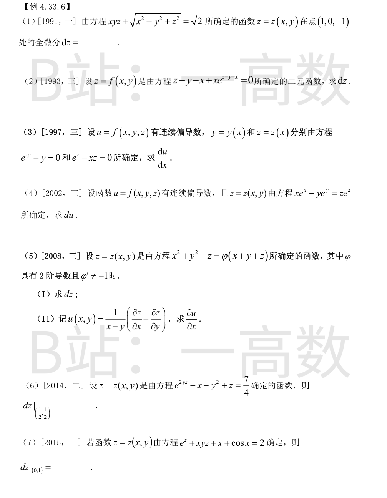
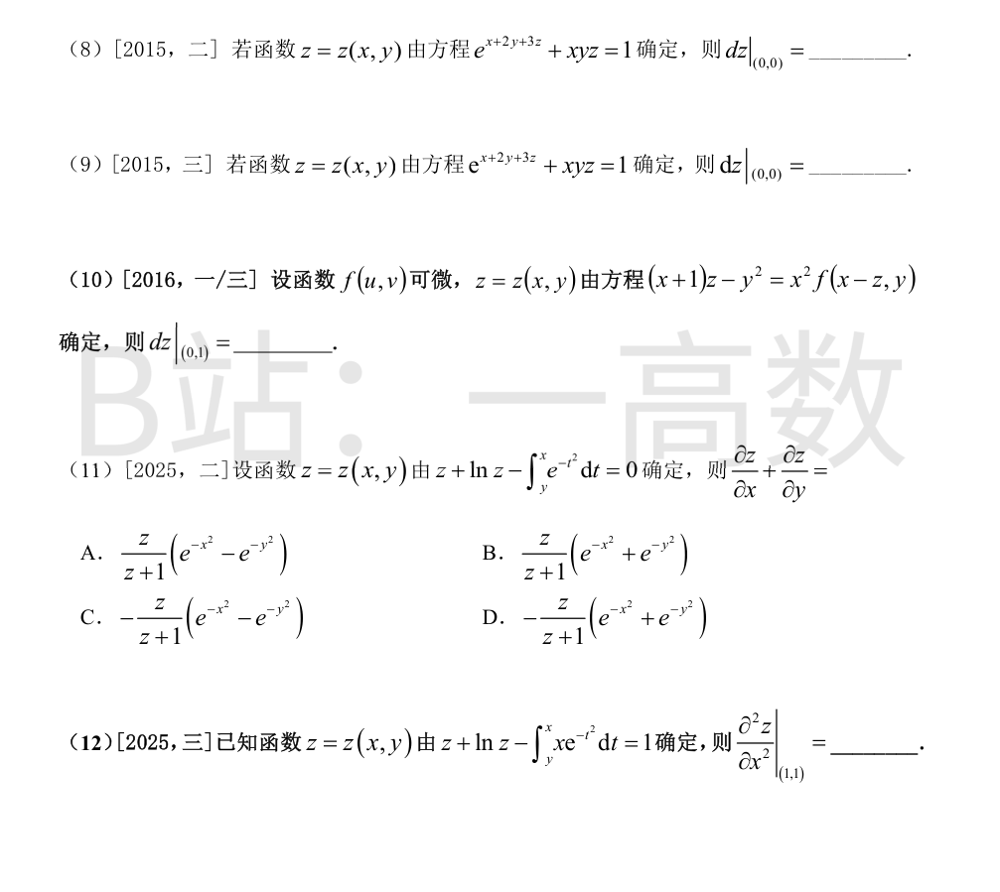
记 $F=xyz+\sqrt{x^{2}+y^{2}+z^{2}}-\sqrt{2}$，验证 $F(1,0,-1)=0$。在 $(1,0,-1)$（根号值为 $\sqrt2$）：
$$F_x=yz+\frac{x}{\sqrt{2}}=\frac{1}{\sqrt{2}},\qquad F_y=xz+\frac{y}{\sqrt{2}}=-1,\qquad F_z=xy+\frac{z}{\sqrt{2}}=-\frac{1}{\sqrt{2}}$$
$$z_x=-\frac{F_x}{F_z}=1,\qquad z_y=-\frac{F_y}{F_z}=-\sqrt{2}$$
$$dz\big|_{(1,0,-1)}=dx-\sqrt{2}\,dy$$
记 $w=z-y-x$，$F=w+xe^{w}$，则
$$F_x=-1+(1-x)e^{w},\qquad F_y=-1-xe^{w},\qquad F_z=1+xe^{w}$$
$$z_x=-\frac{F_x}{F_z}=\frac{1-(1-x)e^{w}}{1+xe^{w}},\qquad z_y=-\frac{F_y}{F_z}=\frac{1+xe^{w}}{1+xe^{w}}=1$$
$$dz=\frac{1-(1-x)e^{z-y-x}}{1+xe^{z-y-x}}\,dx+dy$$
由 $e^{xy}-y=0$（即 $e^{xy}=y$）两边求导：
$$e^{xy}(y+xy')-y'=0\ \Rightarrow\ y'=\frac{-ye^{xy}}{xe^{xy}-1}=\frac{-y^{2}}{xy-1}=\frac{y^{2}}{1-xy}$$
由 $e^{z}-xz=0$ 两边求导：
$$e^{z}z'-z-xz'=0\ \Rightarrow\ z'=\frac{z}{e^{z}-x}=\frac{z}{xz-x}=\frac{z}{x(z-1)}$$
$$\frac{du}{dx}=f'_1+f'_2\,y'+f'_3\,z'=f'_1+\frac{y^{2}}{1-xy}f'_2+\frac{z}{x(z-1)}f'_3$$
记 $G=xe^{x}-ye^{y}-ze^{z}=0$：
$$G_x=(1+x)e^{x},\qquad G_y=-(1+y)e^{y},\qquad G_z=-(1+z)e^{z}$$
$$z_x=-\frac{G_x}{G_z}=\frac{(1+x)e^{x}}{(1+z)e^{z}},\qquad z_y=-\frac{G_y}{G_z}=-\frac{(1+y)e^{y}}{(1+z)e^{z}}$$
$$du=f'_1dx+f'_2dy+f'_3(z_xdx+z_ydy)=\left[f'_1+\frac{(1+x)e^{x}}{(1+z)e^{z}}f'_3\right]dx+\left[f'_2-\frac{(1+y)e^{y}}{(1+z)e^{z}}f'_3\right]dy$$
(I) 方程两边分别对 x、y 求导：
$$2x-z_x=\varphi'(1+z_x)\ \Rightarrow\ z_x=\frac{2x-\varphi'}{1+\varphi'},\qquad z_y=\frac{2y-\varphi'}{1+\varphi'}$$
$$dz=\frac{(2x-\varphi')\,dx+(2y-\varphi')\,dy}{1+\varphi'}$$
(II)
$$z_x-z_y=\frac{2(x-y)}{1+\varphi'}\ \Rightarrow\ u(x,y)=\frac{1}{x-y}\cdot\frac{2(x-y)}{1+\varphi'}=\frac{2}{1+\varphi'}$$
$$\frac{\partial u}{\partial x}=-\frac{2\varphi''\,(1+z_x)}{(1+\varphi')^{2}}=-\frac{2\varphi''}{(1+\varphi')^{2}}\cdot\frac{1+\varphi'+2x-\varphi'}{1+\varphi'}=-\frac{2(1+2x)\varphi''}{(1+\varphi')^{3}}$$
$(\tfrac12,\tfrac12)$ 代入：$e^{z}+\dfrac12+\dfrac14+z=\dfrac74$，即 $e^{z}+z=1$，得 $z=0$。
方程两边对 x、y 求导：
$$2ye^{2yz}z_x+1+z_x=0\ \Rightarrow\ z_x=-\frac{1}{1+2ye^{2yz}}$$
$$2(z+yz_y)e^{2yz}+2y+z_y=0\ \Rightarrow\ z_y=-\frac{2(ze^{2yz}+y)}{1+2ye^{2yz}}$$
代入 $(\tfrac12,\tfrac12,0)$（$e^{0}=1$）：$z_x=-\dfrac12$，$z_y=-\dfrac12$，故
$$dz\big|_{(\frac12,\frac12)}=-\frac12(dx+dy)$$
【仲裁修正】独立校验发现分歧，经仲裁重解，以本答案为准：该点 z=0，F_x=1、F_y=1、F_z=2，z_x=z_y=−1/2，dz=−½(dx+dy)；A 的 −dx 与 B 的 −dx−dy 均错，solver 正确（已核对原书方程）。
$(0,1)$ 代入：$e^{z}+0+0+1=2$，得 $z=0$。方程两边对 x、y 求导：
$$z_x(e^{z}+xy)=\sin x-1-yz,\qquad z_y(e^{z}+xy)=-xz$$
代入 $(0,1,0)$：$z_x=\dfrac{-1}{1}=-1$，$z_y=0$，故
$$dz\big|_{(0,1)}=-dx$$
$(0,0)$ 代入：$e^{3z}=1$，得 $z=0$。方程两边对 x、y 求导：
$$e^{x+2y+3z}(1+3z_x)+yz+xy z_x=0\ \Rightarrow\ (0,0,0):\ 1+3z_x=0,\ z_x=-\frac13$$
$$e^{x+2y+3z}(2+3z_y)+xz+xy z_y=0\ \Rightarrow\ (0,0,0):\ 2+3z_y=0,\ z_y=-\frac23$$
$$dz\big|_{(0,0)}=-\frac13 dx-\frac23 dy$$
与上一小题（2015 数学二）方程与求值点完全相同：$(0,0)$ 处 $z=0$，
$$z_x=-\frac13,\qquad z_y=-\frac23,\qquad dz\big|_{(0,0)}=-\frac13 dx-\frac23 dy$$
$(0,1)$ 代入：$(0+1)z-1=0$，得 $z=1$。方程两边分别对 x、y 求导：
$$z+(x+1)z_x=2x f+x^{2}f'_1(1-z_x)$$
$$(x+1)z_y-2y=x^{2}\left(-f'_1 z_y+f'_2\right)$$
代入 $(0,1,1)$（右侧均含因子 $x^{2}$ 或 $2x$，取值为 0）：
$$1+z_x=0\ \Rightarrow\ z_x=-1,\qquad z_y-2=0\ \Rightarrow\ z_y=2$$
$$dz\big|_{(0,1)}=-dx+2dy$$
与 T5 第 (12) 题为同一道题（2025 数学二）：
$$z_x=\frac{z}{z+1}e^{-x^{2}},\qquad z_y=-\frac{z}{z+1}e^{-y^{2}},\qquad z_x+z_y=\frac{z}{z+1}\left(e^{-x^{2}}-e^{-y^{2}}\right)$$
选 A。
与 T5 第 (13) 题为同一道题（2025 数学三）：$(1,1)$ 处 $z=1$，
$$z_x\left(1+\frac1z\right)=\int_y^x e^{-t^{2}}dt+xe^{-x^{2}}\ \Rightarrow\ z_x=\frac{e^{-1}}{2}$$
$$2z_{xx}-\frac{z_x^{2}}{z^{2}}=2e^{-x^{2}}-2x^{2}e^{-x^{2}}\ \Rightarrow\ 2z_{xx}=\frac{e^{-2}}{4}\ \Rightarrow\ z_{xx}=\frac{1}{8e^{2}}$$
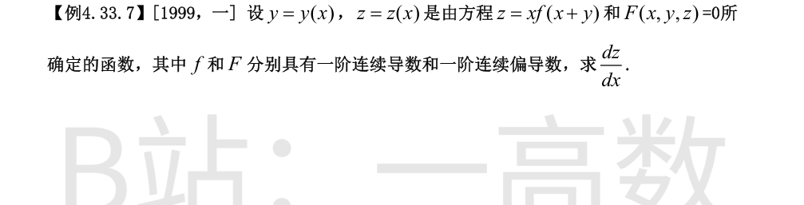
对 $z=xf(x+y)$ 两边关于 x 求导：
$$\frac{dz}{dx}=f(x+y)+xf'(x+y)(1+y')$$
对 $F(x,y,z)=0$ 两边关于 x 求导：
$$F_x+F_y\,y'+F_z\,z'=0\ \Rightarrow\ y'=-\frac{F_x+F_z z'}{F_y}\quad(F_y\neq0)$$
代入第一式：
$$z'=f+xf'+xf'\left(-\frac{F_x+F_z z'}{F_y}\right)$$
$$z'\left(F_y+xf'F_z\right)=(f+xf')F_y-xf'F_x$$
$$\frac{dz}{dx}=\frac{(f+xf')F_y-xf'F_x}{F_y+xf'F_z}$$
其中 $f'=f'(x+y)$，$F$ 的偏导数在 $(x,\,y(x),\,z(x))$ 处取值（设 $F_y+xf'F_z\neq0$）。